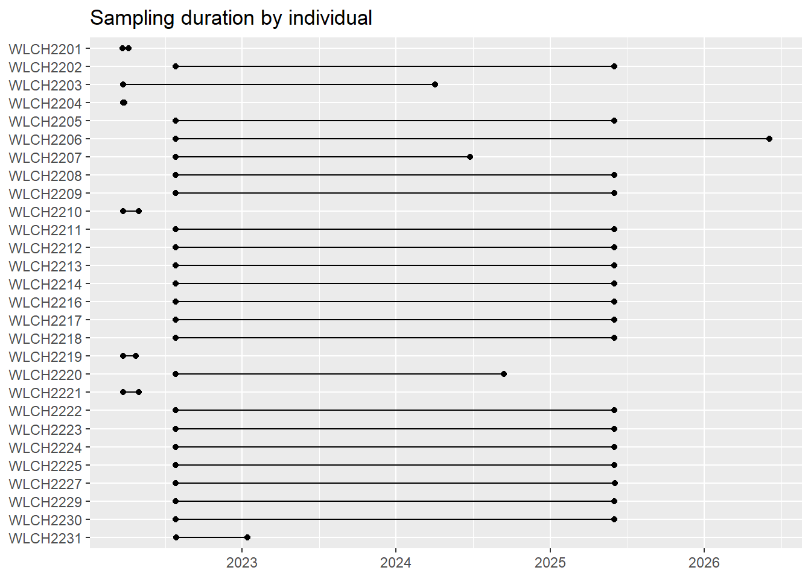

The table displays the first 10 rows of the caribou movement data. Attributes include caribou id, timestamp, longitude, latitude, and year for each GPS relocation.
Tracks are the basic building blocks of movement analysis in the amt package. They allow us to estimate annual and seasonal ranges as well as identify migration pathways. So, we first use the make_track function for convert our data.frame into tracks. Note that we have to specify the crs of the data which, in this case, is lat-long or “EPSG:4326”. We can then project our coordinates to the Yukon Albers projection using the transform_coords function.
# A tibble: 94,536 × 6
x_ y_ t_ id year season
* <dbl> <dbl> <dttm> <chr> <dbl> <chr>
1 541049. 688861. 2022-03-22 23:01:06 WLCH2201 2022 Late winter
2 540838. 688816. 2022-03-23 04:46:01 WLCH2201 2022 Late winter
3 540816. 688807. 2022-03-23 10:30:42 WLCH2201 2022 Late winter
4 540816. 688809. 2022-03-23 16:15:37 WLCH2201 2022 Late winter
5 549165. 681974. 2022-03-23 22:00:37 WLCH2204 2022 Late winter
6 538439. 688245. 2022-03-23 22:00:42 WLCH2203 2022 Late winter
7 545818. 674823. 2022-03-23 22:00:44 WLCH2210 2022 Late winter
8 541062. 688163. 2022-03-23 22:01:24 WLCH2201 2022 Late winter
9 541069. 688176. 2022-03-24 03:45:37 WLCH2201 2022 Late winter
10 545943. 674659. 2022-03-24 03:45:42 WLCH2210 2022 Late winter
# ℹ 94,526 more rows
Plot sampling duration for each individual
The plot shows each individual as a horizontal segment spanning their first to last fix, ordered by total tracking duration (shortest at the bottom).
Code
gps |>group_by(id) |>summarise(start =min(timestamp), end =max(timestamp)) |>mutate(id =fct_rev(factor(id))) |>ggplot(aes(y = id)) +geom_segment(aes(x = start, xend = end, yend = id)) +geom_point(aes(x = start)) +geom_point(aes(x = end)) +labs(x =NULL, y =NULL, title ="Sampling duration by individual")

Calculate movement rates
Steps are computed per individual using steps(), which connects consecutive GPS fixes and calculates step length (sl_, in metres), turning angle (ta_, in radians), and time elapsed (dt_). Speed is derived as step length divided by duration.
Step lengths and speeds are heavily right-skewed - most steps are short/slow, with a long tail of occasional fast, directed movements. This is typical for GPS data with irregular fix intervals.
Turning angles peak near 0, indicating a tendency for directed (straight-line) movement, with secondary peaks near ±π from reversals.
Both distributions look roughly log-normal on the transformed scale.
Step lengths are centered around ~1 km, and speeds around ~0.01–0.1 km/h, with the long tails now visible rather than collapsed against the y-axis.
Movement rates by season
Season labels are joined back to steps from the original GPS data, then combined into a single period variable ordered chronologically through the annual cycle.
We now look at how movement rates vary by period and year. A few things are worth noting in the tables:
The 2020 spring migration value (3.26 km) is almost certainly an artifact — there are only 25 steps recorded for that year-period combination, likely because collaring started mid-season.
Calving step lengths have declined steadily from 0.21 km in 2021 to 0.12 km in 2025, which could be worth investigating further.
Late winter 2026 looks low (0.12 km), but that’s probably a partial year effect since data collection is ongoing.
The amt package also provides functions for more advanced analyses, such as calculating residence time, identifying stopovers, and performing trajectory segmentation.
Here’s a brief example of calculating residence time: